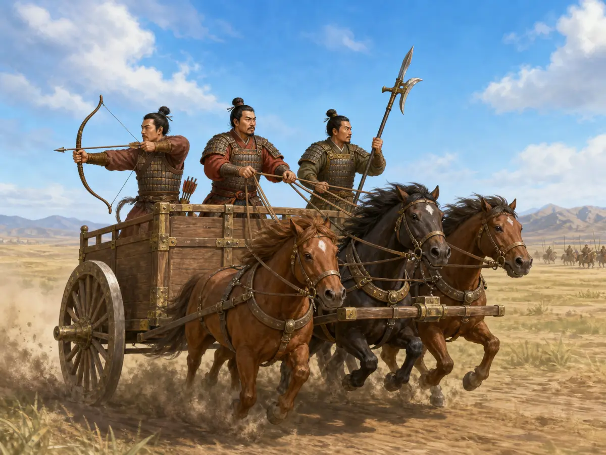
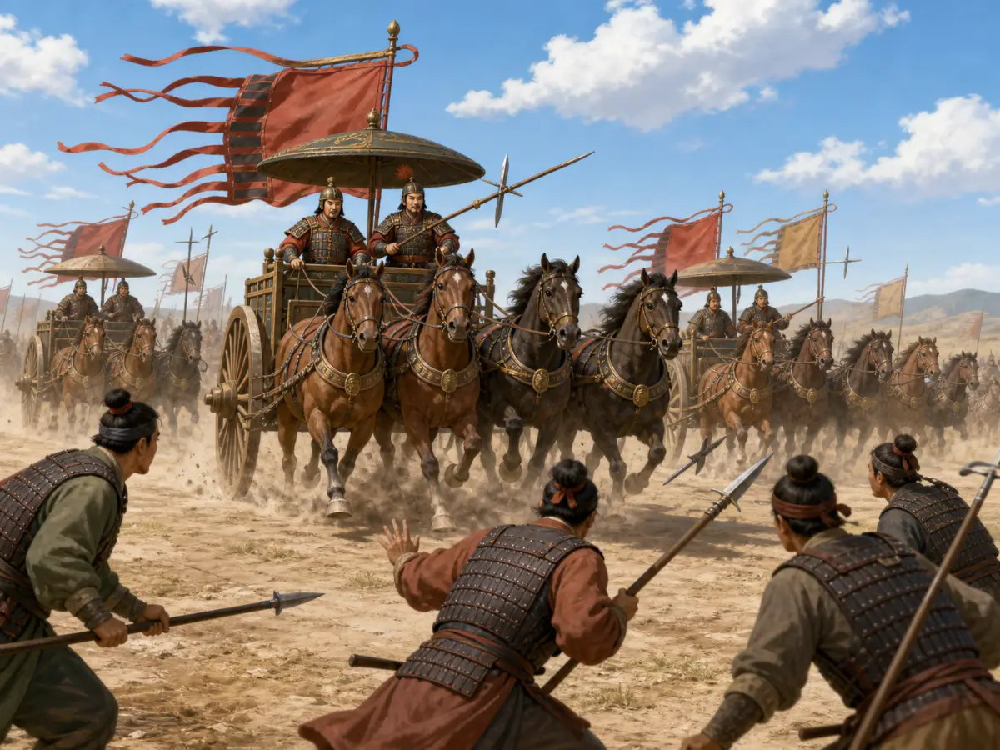
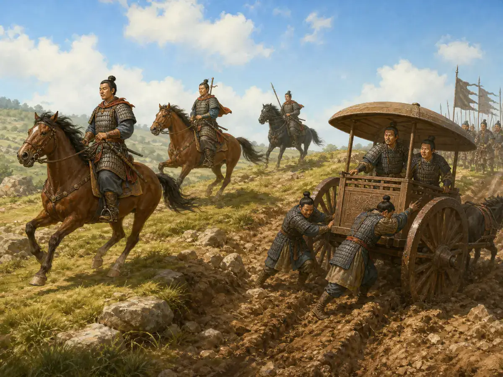
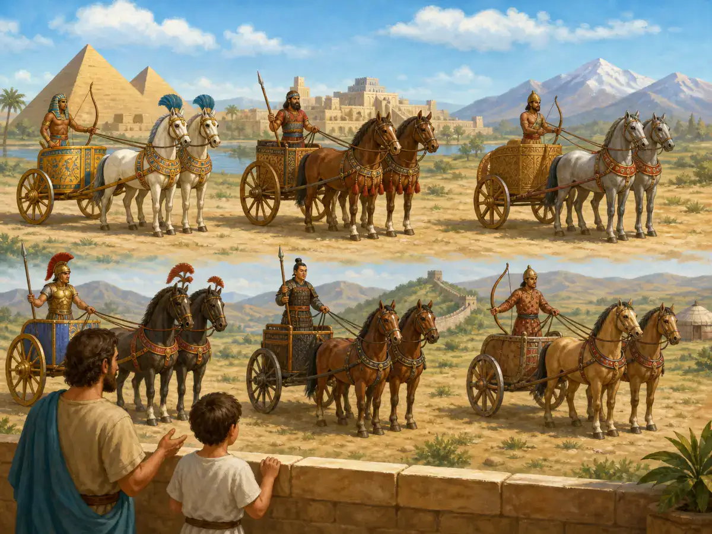

古代的战车像今天的坦克吗？
Were Ancient Chariots Like Today's Tanks?
Page 1
三个人，一辆车
Three People, One Chariot

A chariot often carried a driver, an archer, and a fighter with a long weapon.
公元前一千多年的一个早晨，华北平原上，两排战车遥遥相对。每辆车上站着三个人 - 中间是驾车的御者，两条缰绳勒在手心感受着马嘴传来的每一次鼻息；左边是弓箭手，箭壶里插着几十支铜镞箭；右边是长兵器手，握着一杆长戟。
双方战鼓擂响。战车同时启动，马蹄把泥土扬到半空中。两排战车在平原中间交错而过。交错的那几秒钟，右边的长戟手拼命刺对方车上的人，左边的弓箭手近距离射对方的马。刺中了就赢，刺不中等下一次交错。
Imagine a morning more than three thousand years ago, on the North China Plain. Two rows of chariots face each other from far away.
On each chariot stand three people. In the middle is the driver. He holds the reins and feels every breath and pull from the horses. On one side stands an archer, with bronze-tipped arrows in his quiver. On the other side stands a fighter holding a long halberd.
The war drums begin. The chariots rush forward together. Horse hooves throw dirt into the air.
The two lines cross in the middle of the plain. For just a few seconds, everything happens fast. The fighter with the long weapon tries to stab the people on the other chariot. The archer shoots at the enemy horses from close range.
If they hit, they win. If not, they have to wait for the next pass.
Page 2
像坦克，但又很不像
A Little Like Tanks, but Not Really

Chariots and tanks can both feel scary coming toward you, but they belong to very different ages.
春秋时期，一个国家的军事实力，往往用它有多少辆战车来衡量。"千乘之国"是不容小觑的力量，"万乘之国"是霸主。
战车在平原上确实很有压迫感。马比人快，车一冲起来，前排步兵很容易先被声势吓住。但在山地、水田、树林里，战车的麻烦也很明显：轮子不好走，转向不方便，地形一乱，车上三个人就容易吃亏。
坦克当然比战车厉害得多，材料、动力、地形适应能力都不是一个时代的东西。可它们有一点相通：在各自的战场上，都像是用来冲乱阵形、制造压力的大家伙。步兵看见这种东西迎面压过来，本能就会紧张。
In the Spring and Autumn period, people often measured a state's military strength by how many chariots it had. A "state of a thousand chariots" was not weak. A "state of ten thousand chariots" was a major power.
On open plains, chariots could feel very frightening. Horses were faster than people. When a chariot rushed forward, the sound and speed alone could make foot soldiers nervous.
But chariots had problems too. In mountains, wet fields, or forests, wheels were not helpful. Turning was hard. If the ground became rough or messy, the three people on the chariot could suddenly be in trouble.
Of course, tanks are much more powerful than chariots. They use very different materials, engines, and technology. They also belong to a completely different age.
Still, there is one small similarity. In their own time, both chariots and tanks could push toward soldiers, break up lines, and create fear.
Page 3
为什么战车慢慢退场了？
Why Did Chariots Slowly Leave the Battlefield?

Riders on horseback were more flexible, so they slowly took over many chariot jobs.
一个重要原因，是马背上的骑兵越来越重要。骑兵不需要那么平整的路，也不用配一整套战车系统，过河、爬坡、穿树林都更灵活。赵武灵王推行胡服骑射，常被看作中国军事转型里很关键的一步。战车并不是一夜之间全消失了，但它在战场上的主角位置，确实慢慢让给了骑兵。
后来很多战车更多保留在礼仪和仪仗场合。它们没有立刻消失，而是换了自己的位置。
One big reason was that riders on horseback became more important.
A rider did not need a flat road the way a chariot did. A rider also did not need a whole vehicle team. Horses could cross rivers, climb slopes, and move through woods more easily.
King Wuling of Zhao is often remembered for encouraging his soldiers to wear steppe-style clothes and learn horseback archery. This was an important step in a larger military change.
Chariots did not disappear overnight. But little by little, their starring role on the battlefield moved to cavalry.
Later, many chariots stayed around for ceremonies and grand displays. They did not vanish. They changed jobs.
Page 4
不只中国，别处也是这样
This Happened in Other Places Too

Many ancient civilizations used chariots, then slowly used them less.
不只有中国，世界上很多古代文明都曾大量使用战车。后来随着骑兵、步兵组织、武器系统一起变化，战车的重要性也都慢慢下降。原因不只一个，地形限制、维护成本、战术变化，全都算在里面。这个很早的"车战时代"，就这样一点点退到了历史后面。
武器史上，最后留下来的，往往不只是看谁威风，更要看谁更能跟上变化。
China was not the only place that used many chariots. Many ancient civilizations did.
Later, as cavalry improved, groups of foot soldiers changed, and weapons changed, chariots became less important in many places.
There was not just one reason. The land under the wheels mattered. Cost mattered. New battle plans mattered too. That early age of chariot warfare slowly moved into the background of history.
In the history of weapons, the grandest-looking thing does not always last. What lasts is often the thing that can change with the times.
小结
Summary
战车在平原上曾经非常威风，也曾经代表一个国家的实力。但它不够灵活，后来慢慢让位给骑兵。古代战车像坦克吗？可以类比一点点，但它更像属于自己时代的一种移动战斗平台。
Chariots were once powerful on open plains. They could even show how strong a state was. But they were not flexible enough, and over time they gave way to cavalry. Were ancient chariots like tanks? Only a little. A better way to say it is this: they were moving battle platforms made for the needs and limits of their own age.